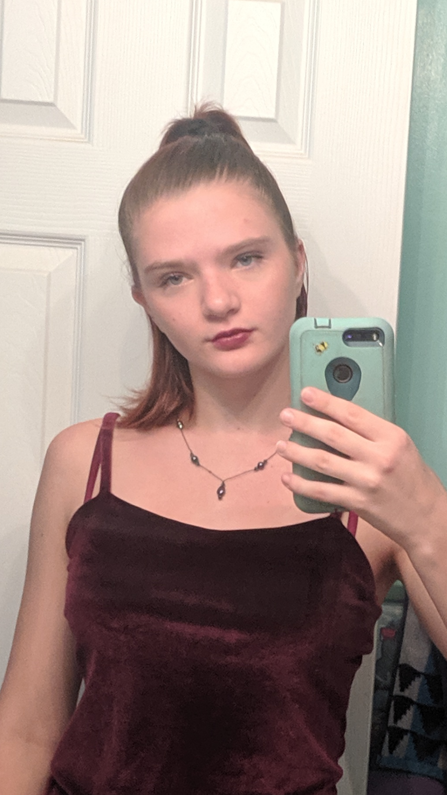
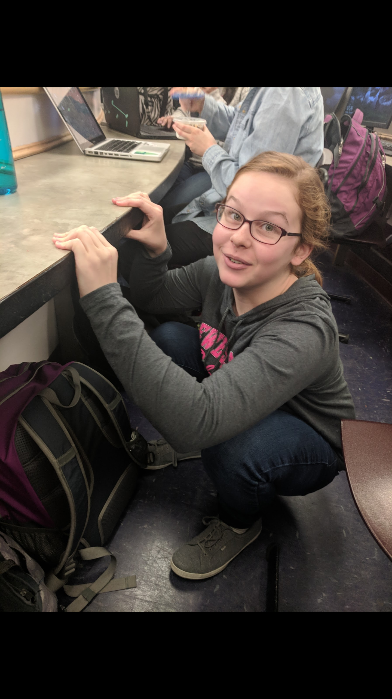
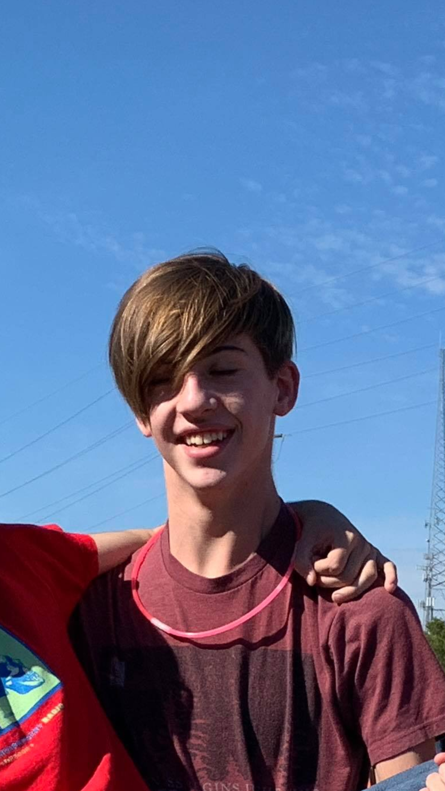

The Branch
The Midlothian High School branch currently operates with 5 volunteers, working with Evergreen Elementary School.
Schools They Work With
Evergreen ES
Officers

Gabrielle O'Sickey

Isabelle Giorgis
Dominic Dao
